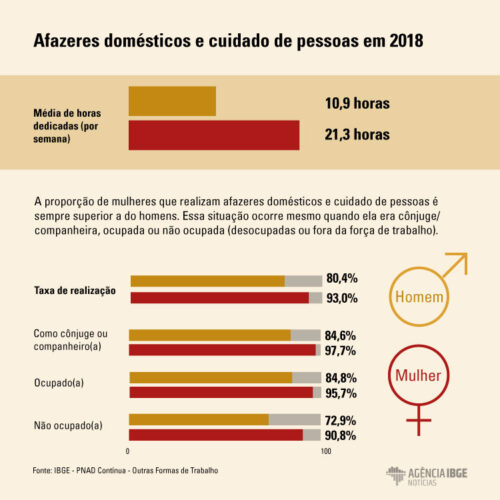

DESIGUALDADE DE GÊNERO NO BRASIL E NA AMÉRICA LATINA
Quando falamos sobre países onde as leis beneficiam os homens e prejudicam as mulheres,
como os casos que citamos acima, fica a impressão de que essas situações estão muito longe da nossa realidade. Por isso,
é importante lembrar que a desigualdade de gênero pode estar refletida de várias formas na sociedade,
não apenas por meio de leis explícitas. No Brasil, legalmente as mulheres e os homens possuem os mesmos direitos, mas,
na prática, ainda há uma grande disparidade de oportunidades e tratamentos.
Segundo o Instituto Brasileiro de Geografia e Estatística (IBGE), em levantamento realizado em 2017, o rendimento das mulheres equivale a cerca de três quartos da renda masculina. Enquanto a média da renda dos homens foi de R$2.306, a das mulheres foi de R$1.764. A desigualdade econômica também é um problema na América Latina como um todo. Dados do relatório da Comissão Econômica para a América Latina e o Caribe indicam que 27,5% das mulheres da região não possuem renda própria, contra 13,1% da população masculina. Isso implica que cerca de um terço das mulheres do continente depende inteiramente de outros para sua subsistência.
Algo que pode explicar essa situação é o fato de que, historicamente, o sexo feminino foi relacionado a tarefas de cuidado com a família e o lar, sem liberdade para trabalhar fora ou realizar atividades para o próprio sustento. Apesar de hoje a situação estar mudando, os dados de 2017 do IBGE indicam que 88% das mulheres ainda são responsáveis pelos afazeres domésticos, o que dificulta a inserção, em condições igualitárias, da população feminina na esfera pública.
Gradualmente, por meio de políticas públicas voltadas ao apoio das mulheres e graças à intensa mobilização dos movimentos feministas,
a situação tem melhorado. Segundo uma pesquisa do Fórum Econômico Mundial, o Brasil subiu três posições, alcançando a 92ª colocação
entre 153 países. A América Latina e o Caribe conseguiram reduzir, até o momento, 72,1% de sua desigualdade de gênero. O Brasil ficou
um pouco abaixo da média geral de seus vizinhos, tendo diminuído 69% da disparidade de gênero. No entanto, se o progresso continuar nesse ritmo, o Fórum estima que levará 59
anos para alcançar a igualdade de gênero nos países latino-americanos.

ler novamente
História e Evolução da Igualdade de Gênero